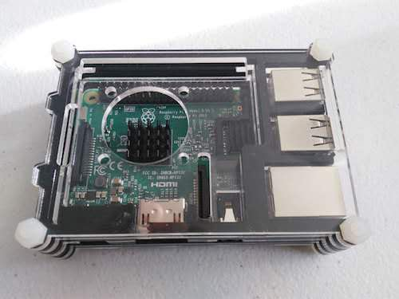
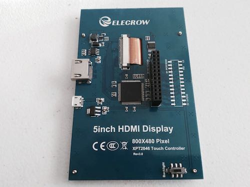
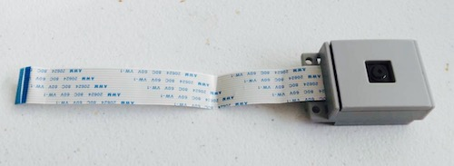
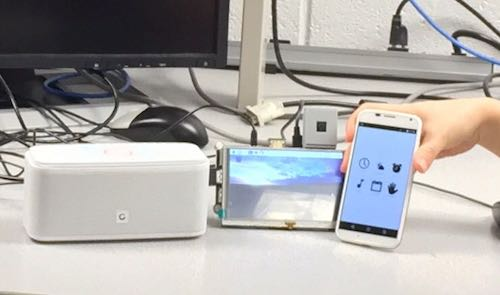

Objective
The purpose of this project is to build a multifunctional alarm clock with Raspbery Pi. The smart alarm clock is embedded with various functions, including time display, weather report, music player, google calendar events reminder. Moreover, these basic function modules could be controlled either through gesture control or remotely via an android app on phone by user.
Introduction
The whole system is built based on a Raspberry Pi 3 module. We use a 5’ touch screen as display, and a 5-megapixel Pi camera to record images and videos for gesture control. Some APIs as well as third party libraries are required for our project.

figure 1: Raspberry Pi 3 Module
As basic functions of a smart alarm clock, time display, weather report, music player, and events gallery are successfully implemented with external libraries and APIs support. Using Pygame library, we can display all information on TFT screen by creating a GUI.

figure 2: 5’ Touch Screen
For gesture control, we install OpenCV, embedded in Python, along with other image and video processing libraries, mathematics python libraries, and more important, Pi camera library. We explore method of capture images using Pi camera, and process these images with OpenCV to detect motion and recognize hand gestures.

figure 3: Pi camera
To build an android app, we design an Android APP using Android Studio and achieve remote control of the Rasapberry Pi .
On final presentation, we run a bash script to enable google calendar running background, continuing to update event information and set alarm automaticlly. Also, server on Raspberry Pi is also enabled to connect with our app on phone. All functions including gesture control could be open by clicking on phone. Once gesture control is selected, other functions will be triggered via different hand gestures input.

figure 4: Smart Alarm Clock